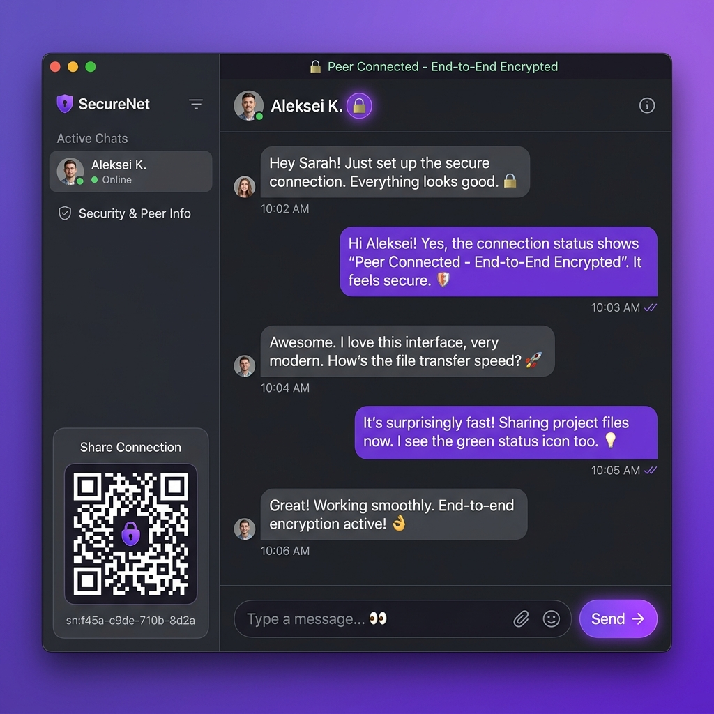

In a world where mega-corporations host, index, and sometimes analyze billions of daily text messages, finding true privacy is increasingly difficult. Meta's WhatsApp, Telegram, and even Signal still rely on centralized servers to relay your messages — meaning a third party always sits between you and the person you're talking to. Even when end-to-end encryption is implemented perfectly, the metadata—who you talk to, when you talk, and from what IP address—remains highly visible and logged on central servers. This centralized honeypot represents a significant vulnerability to server compromises, government subversion, and massive data breaches.
Enter Peer-to-Peer (P2P) messaging — a fundamentally different network architecture that eliminates the middleman entirely. Apps like BER OF CHAT use WebRTC technology to create a direct, encrypted tunnel between two browsers. No server ever touches your message content, nor is there a centralized database capable of harvesting your social graph or logs.

What is Peer-to-Peer (P2P) Messaging?
Unlike traditional chat apps that send your message to a central server (which then forwards it to your friend), P2P applications establish a direct line between you and the recipient. Think of it like walking up to someone and speaking directly to them, instead of handing a note to a messenger who reads it, copies it, and then delivers it.
In technical terms, P2P messaging uses WebRTC (Web Real-Time Communication) — a browser-native technology that enables real-time audio, video, and data transmission directly between browsers without plugins or downloads.
Historical Context & Technological Significance
To understand the importance of modern peer-to-peer (P2P) communication, we must examine the history of digital messaging. In the early days of the Internet, IRC (Internet Relay Chat) and standard instant messengers (like ICQ or AIM) relied entirely on centralized servers. Although early P2P desktop applications like Napster, BitTorrent, and early iterations of Skype proved the viability of decentralized architectures, they required dedicated client software, custom installations, and complex port-forwarding configurations that were far too complex for the average consumer.
The true paradigm shift occurred in 2011 with the introduction of WebRTC (Web Real-Time Communication) by Google, later standardized by the W3C and IETF. For the first time, developers could establish direct, low-latency, peer-to-peer connections natively within the web browser without any external plugins or desktop software. WebRTC democratized secure, serverless voice, video, and data transmission, turning every web browser into a secure cryptographic node. By moving the P2P engine directly into the browser, users can instantly establish zero-footprint, ephemeral communications, shifting power away from monopolistic central service providers back to the individual endpoints.
How WebRTC Makes Direct Connections Possible
WebRTC was originally developed by Google and is now a W3C standard built into every modern browser. Here's how it establishes connection phases in a P2P chat environment:
- Signaling: When you create a room, a lightweight signaling server (like PeerJS) helps the two browsers find each other — similar to exchanging session descriptions and network profiles.
- ICE Candidates Negotiation: The browsers negotiate the best network path using STUN servers to discover external IP addresses. If direct hole punching fails due to strict firewalls, a TURN relay is deployed as an encrypted fallback.
- DTLS/SRTP Encryption: Once a path is negotiated, a cryptographic handshake establishes E2E encryption for data and media channels. This happens at the client layer—not even the application developer can intercept your stream.
- Direct Communication: After the handshake completes, signaling servers can go offline entirely. All messages, voice, and video payloads flow directly between the active browser endpoints.
Deep-Dive Technical, Algorithmic, & Scientific Analysis
Establishing a direct peer-to-peer connection within a secure web browser involves complex networking challenges, cryptographic negotiations, and strict protocol standards. To understand how apps like BER OF CHAT guarantee total confidentiality, we must analyze the entire connection lifecycle, from discovery to session teardown.
1. The Signaling Handshake and Session Description Protocol (SDP)
Because browsers cannot natively know the IP addresses or port configurations of other arbitrary browsers, they require a temporary, out-of-band communication channel called a Signaling Channel (such as PeerJS or a secure WebSocket server) to exchange initialization metadata. This process is governed by the Session Description Protocol (SDP).
The signaling process occurs in the following sequential phases:
- Offer Generation: Peer A instantiates a new
RTCPeerConnectionobject. The browser generates a cryptographically secure SDP Offer containing local media attributes, audio/video codecs, support for DTLS security profiles, and connection configurations. - Offer Dispatch: Peer A sends the SDP Offer via the signaling server to Peer B. Note that the signaling server acts only as a blind switchboard—it cannot read or tamper with the cryptographic parameters without breaking the subsequent handshake.
- Remote Description Application: Peer B receives the SDP Offer and applies it as its
RemoteDescription. - Answer Generation: Peer B generates a corresponding SDP Answer, which contains its own media capabilities, selected codecs, and cryptographic parameters.
- Answer Dispatch: Peer B transmits this SDP Answer back to Peer A through the signaling channel, which Peer A applies as its
RemoteDescription.
2. NAT Traversal via STUN, TURN, and ICE
Once the session configurations are matched, the peers must locate a valid network route to bypass firewalls and Network Address Translation (NAT) devices. This is accomplished using Interactive Connectivity Establishment (ICE).
ICE systematically gathers and tests various routing pathways called ICE Candidates in three distinct categories:
- Host Candidates: The peer's local, private IP address on its LAN (e.g.,
192.168.1.50). - Server Reflexive (STUN) Candidates: The public IP address and port allocated to the peer by its NAT router. The browser discovers this by sending a lightweight UDP binding request to a STUN (Session Traversal Utilities for NAT) server. The STUN server simply replies with: "This is the public IP and port from which your packet originated."
- Relay (TURN) Candidates: The IP address of a TURN (Traversal Using Relays around NAT) server. When strict symmetric NATs or corporate firewalls block direct UDP traffic, the connection falls back to routing encrypted packets through a TURN relay. Importantly, because DTLS/SRTP encryption is negotiated end-to-end between the browsers, the TURN server operates as a blind forwarder—it cannot inspect or decrypt the media or data flowing through it.
3. Cryptographic Layer: DTLS, SRTP, and Perfect Forward Secrecy (PFS)
Once the ICE framework negotiates a valid path, the peers initiate a direct cryptographic handshake. WebRTC mandates encryption for all data channels and media streams.
- DTLS (Datagram Transport Layer Security): Used to secure the
RTCDataChannel. DTLS is functionally identical to TLS but operates over UDP to prevent head-of-line blocking. - SRTP (Secure Real-time Transport Protocol): Used to encrypt high-fidelity audio and video streams.
- Key Exchange Mechanics: During the DTLS handshake, the peers perform an Elliptic Curve Diffie-Hellman Ephemeral (ECDHE) key exchange. Each browser generates an ephemeral private/public key pair on the fly. They exchange public keys and mathematically compute a shared secret key (using curve X25519) without ever transmitting the key over the wire.
- Symmetric Encryption: This shared secret is used to derive AES-256-GCM symmetric session keys to encrypt and authenticate all subsequent messages and media.
- Perfect Forward Secrecy (PFS): Because the ECDHE key pairs are entirely ephemeral and generated in the browser's volatile RAM, they are immediately destroyed when the session terminates. Even if an adversary records the encrypted network traffic and subsequently compromises a user's device, it is mathematically impossible to decrypt past sessions because the keys no longer exist anywhere in the universe.
4. Local Cryptographic Isolation and Browser Storage Security
Data security must also extend to the browser's persistent client-side storage to protect data at rest. BER OF CHAT achieves this through the browser-native Web Crypto API:
- Zero Server State: No message history is sent to or stored on any server.
- Local Sandbox Encryption: When local message persistence is enabled, database records are written to a sandboxed IndexedDB instance. To prevent unauthorized disk inspection or local extraction, records are encrypted using AES-GCM-256.
- Key Derivation: The cryptographic key is derived from a user-supplied room password using PBKDF2 (Password-Based Key Derivation Function 2) with 100,000 hashing iterations, ensuring that even if a bad actor gains physical access to the device's storage, the local database remains a cryptographically locked block of random noise.
NAT Types and P2P Traversal Behaviors
The viability of a direct peer-to-peer connection depends on the network topologies of both participants. Below is a comprehensive reference mapping the success rate of STUN-based direct connections across different NAT combinations:
| Local Peer NAT | Remote Peer NAT | STUN Direct P2P Success? | TURN Fallback Needed? | Traversal Detail |
|---|---|---|---|---|
| Full Cone | Full Cone | 100% Yes | No | Direct mapping; firewall permits all incoming packets once outbound is initiated. |
| Port-Restricted | Port-Restricted | 90%+ Yes | No | Standard hole punching matches IP and port pairs successfully. |
| Symmetric NAT | Full/Restricted | ~50% Yes | Conditional | Depends on the predictability of port allocation on the symmetric side. |
| Symmetric NAT | Symmetric NAT | 0% No | Yes (Mandatory) | Both sides change external ports for every request. Direct connection is mathematically blocked. Relayed via TURN. |
P2P vs. Centralized Chat Architectures
To highlight the structural differences between client-server and true peer-to-peer systems, consider the expanded engineering comparison below:
| Security Variable | Traditional Centralized Apps (e.g., Telegram, WhatsApp) | BER OF CHAT (P2P Architecture) |
|---|---|---|
| Server Storage | Messages stored in central databases (ephemeral or persistent). | Zero Server Storage (Volatile RAM or encrypted local IndexedDB). |
| User Identification | Requires phone number, email address, or identity verification. | No Account Required (Randomly generated public keys). |
| Key Governance | Keys often generated, escrowed, or managed by the service provider. | End-to-End browser-only generation (ECDHE on the client side). |
| Metadata Harvesting | Collects user contacts, location, message timestamps, and social graphs. | Zero Metadata Collection (Session metadata is isolated to the client). |
| Subpoena Vulnerability | Highly vulnerable; servers can be court-ordered to log or turn over backups. | Completely Immune (There is no server data to physically seize). |
Why Privacy Matters Now More Than Ever
- No Central Database: There is no giant honeypot of chat logs for hackers to breach. Your messages exist only in your browser's memory.
- Native Encryption: WebRTC connections are inherently encrypted end-to-end using DTLS-SRTP. There's no way to "opt out" of encryption — it's mandatory by design.
- Zero Retention: Once the browser window is closed, the session is gone forever. No records remain on any server anywhere.
- IP Protection: Advanced P2P apps like BER OF CHAT offer an "IP Masking" feature that routes traffic through TURN relay servers, hiding your real IP address even from the person you're chatting with.
Step-by-Step Practical WebRTC Connection Checklist
Setting up a robust, secure P2P WebRTC data connection requires a disciplined engineering approach. Use this technical checklist to design or verify your browser-based messaging implementations:
- Initialize the Connection Instance: Instantiate the
RTCPeerConnectionwith a robust, geographical list of redundant STUN and TURN server endpoints. - Designate a Data Channel: Call
createDataChannel("chat-channel", { ordered: true })on the initiating peer to ensure messages arrive in the correct sequence without packet loss. - Configure ICE Candidate Handling: Attach an
onicecandidatelistener. Whenever a candidate is discovered, serialize it and transmit it instantly to the remote peer via the signaling layer. - Coordinate the Handshake:
- Initiator calls
createOffer(), sets it locally withsetLocalDescription(), and dispatches it. - Receiver calls
setRemoteDescription(), generates a response viacreateAnswer(), sets it locally viasetLocalDescription(), and dispatches the answer back.
- Initiator calls
- Handle Incoming Channels: On the receiving peer, attach an
ondatachannellistener to capture the channel reference and handle incoming streams. - Implement Heartbeat Monitoring: Set up a periodic ping/pong message loop across the active data channel to monitor connection vitality and detect abrupt socket disconnections.
Regulatory Compliance
BER OF CHAT is designed to comply with multiple international regulations while maintaining maximum privacy:
- India (DPDP Act 2023 & IT Rules 2021): Message hashes (not content) are logged for traceability. Indian users verify identity via mobile OTP.
- Europe (GDPR): EU users see a consent banner and can reject all data processing. A "Delete My Data" button provides immediate data erasure.
- UAE & China: Voice/Video calling is automatically disabled to comply with local VoIP restrictions.
Frequently Asked Questions
Q1: Does establishing a P2P WebRTC connection expose my public IP address to the other person?
Answer: Yes, by its very nature, a direct peer-to-peer connection requires each browser to know the direct IP address of the remote endpoint to route UDP packets correctly. For close contacts, this is highly efficient. However, if you are communicating with an untrusted party, this exposes your approximate geographic location and network provider. To solve this critical privacy concern, advanced applications like BER OF CHAT include an IP Masking / Proxy Mode. When enabled, the app forces all media and message traffic to route through an intermediary TURN server. This shields your physical IP address, presenting only the TURN server's IP to the remote party, thus giving you VPN-like metadata obfuscation while preserving end-to-end cryptographic confidentiality.
Q2: If there are no central servers to store messages, how do offline messages work?
Answer: In a strict P2P model, there is no centralized database holding messages in limbo while a recipient is offline. For a conversation to happen, both endpoints must be active online at the same time. If a contact is offline, messages cannot be delivered immediately. P2P architectures prioritize absolute privacy over persistent server-side caching. However, hybrid decentralized protocols solve this through client-side queuing or decentralized escrow networks. In the browser environment, messages can be securely cached in the sender's local, encrypted storage (IndexedDB) and automatically transmitted the moment a secure WebRTC handshake is established when both peers return online.
Q3: Why does a peer-to-peer web application need a signaling server at all?
Answer: A signaling server is required because browsers cannot discover each other spontaneously. Before you can speak directly to someone over a private wire, you need a directory or a common meeting point to exchange contact details. The signaling server acts as this temporary directory. It simply forwards the initial connection metadata (the SDP offers, answers, and ICE candidate strings) from Peer A to Peer B. Once the browsers receive each other's connection details and successfully negotiate their direct, encrypted connection, the signaling server is completely bypassed. If the signaling server goes offline after the connection is established, the active chat session will continue uninterrupted.
Q4: How does WebRTC protect against Man-in-the-Middle (MITM) attacks during the handshake?
Answer: WebRTC incorporates robust defenses against MITM attacks. During the initial SDP handshake, the browser includes a secure cryptographic hash (a "fingerprint") of its local DTLS certificate within the SDP exchange. When the direct DTLS connection is established, the browser verifies that the certificate presented by the peer exactly matches the fingerprint received during the signaling phase. Because modern signaling channels can be secured using standard HTTPS/WSS (WebSockets over TLS), the authenticity of the SDP fingerprint is cryptographically guaranteed. Furthermore, users can manually verify "security cards" or compare out-of-band cryptographic hashes to confirm that their keys have not been altered or intercepted.
Q5: What happens to connection quality and latency when a P2P session transitions to a multi-user group chat?
Answer: In a standard P2P "mesh" network, each participant must establish a direct, individual WebRTC connection with every other participant in the room. In a three-user group, this means every user has 2 upstream and 2 downstream connections. As the number of participants ($N$) grows, the required network bandwidth scales quadratically as $O(N^2)$. For large groups, this mesh model can severely saturate a user's upload bandwidth and strain mobile processors. P2P chat platforms manage this by optimizing local data transfer limits, restricting group sizes, or transitioning multi-user setups to SFU (Selective Forwarding Unit) models where encrypted media streams are routed through a secure, blind central router that duplicates streams without decrypting them.
The Future of P2P Communication
As governments worldwide push for greater surveillance capabilities and data retention mandates, P2P communication represents a critical technological counterbalance. While centralized platforms will always exist for convenience, privacy-conscious users increasingly demand alternatives that respect their fundamental right to private conversation.
Technologies like WebRTC have matured to the point where P2P applications can offer the same quality of service — real-time messaging, crystal-clear voice calls, and HD video — without the privacy trade-offs of traditional platforms.
Nishikant Xalxo
@nishix_vampNishikant is a systems architect, technical writer, and the core developer behind SHADER7. He specializes in designing high-performance, private, client-side web applications and decentralized, serverless browser-based systems.
Experience True P2P Chat
Try BER OF CHAT — secure, serverless messaging, voice, and video calling right in your browser. No accounts, no downloads, no data logging.
Start Chatting Now →